Virun
Explore the seven launch destinations
Seven destination themes
See the trip before you choose it
Every city uses real repository photos and a distinct full-page weather treatment.

--°
Kashmir
Snow-covered landscapes and mountain routes

--°
Goa
Beaches, forts and heritage streets

--°
Hyderabad
Historic landmarks and food districts

--°
Visakhapatnam
Coastal views and city experiences

--°
Mumbai
Sea link, colonial icons and city lights

--°
Delhi
Monuments, avenues and old-city bazaars

--°
Bengaluru
Palaces, parks and garden-city streets
Goa photo gallery
Fifteen views across Goa
Beaches, forts, churches, heritage streets, a waterfall and a temple from the expanded repository set.
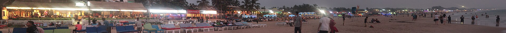

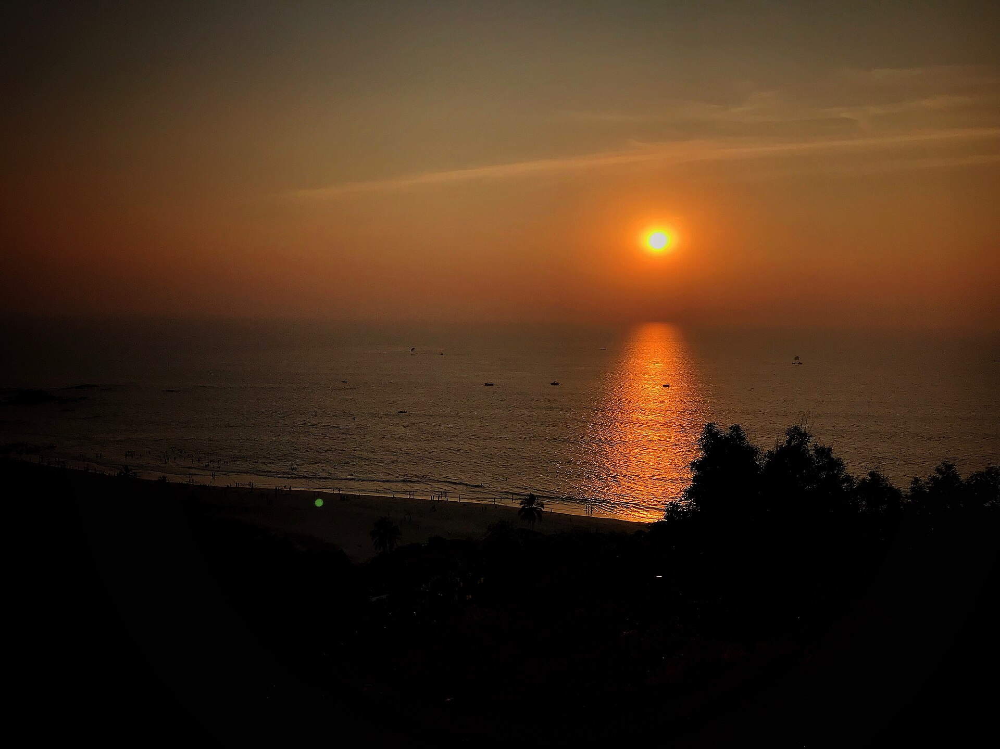
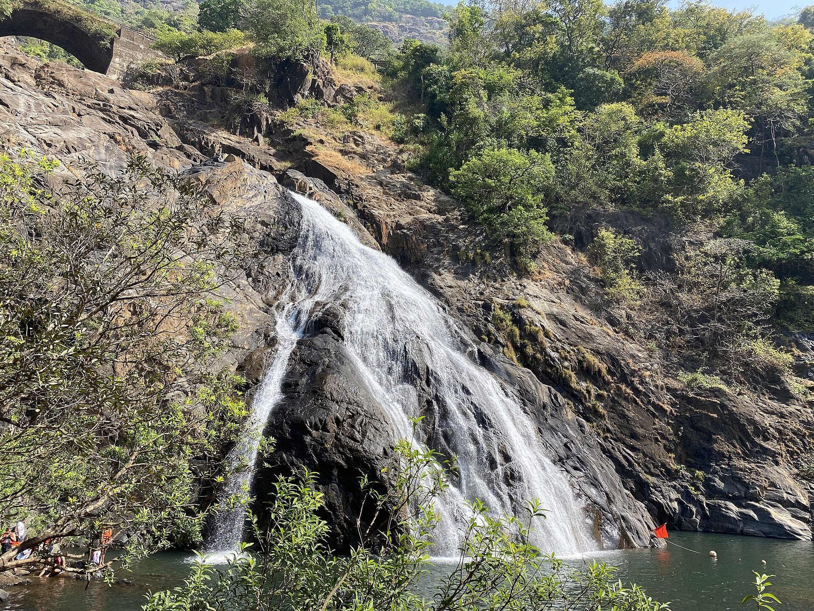
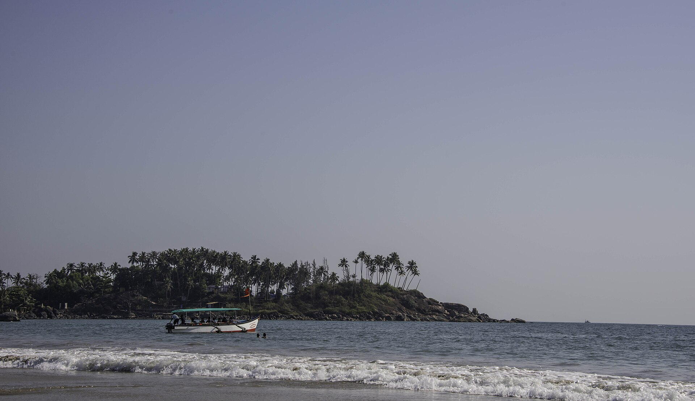
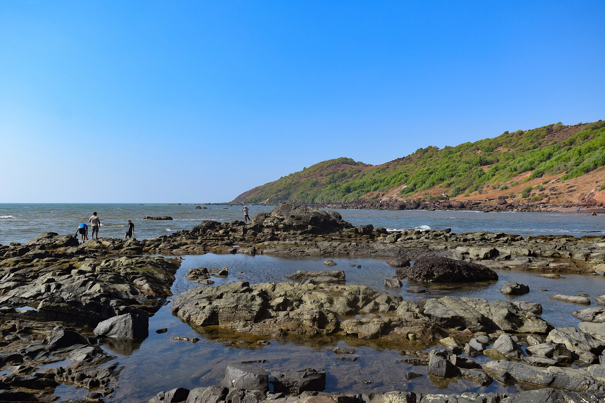
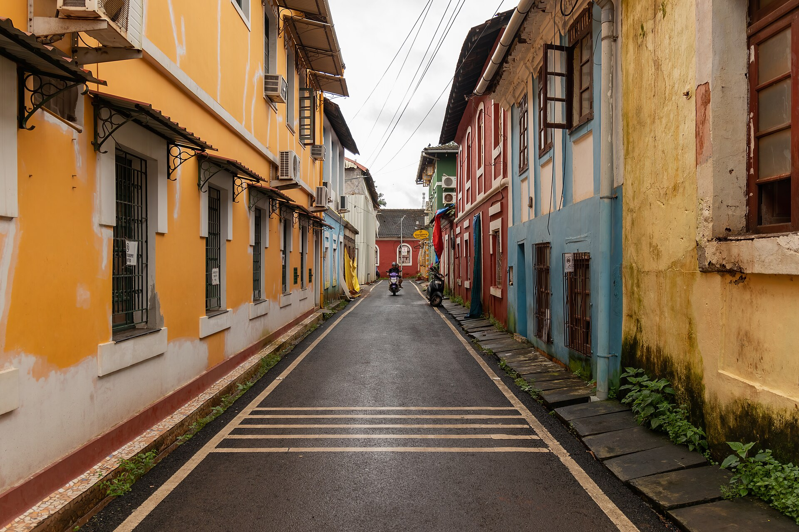
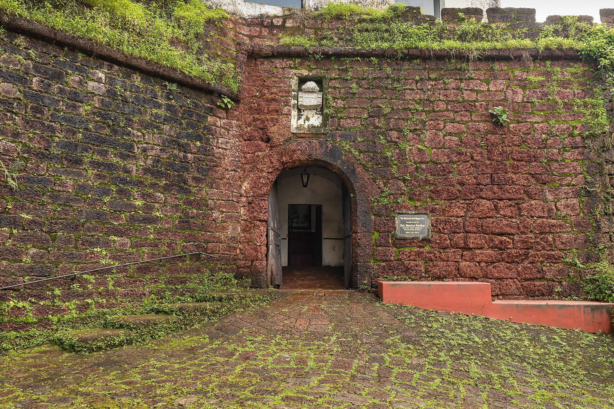
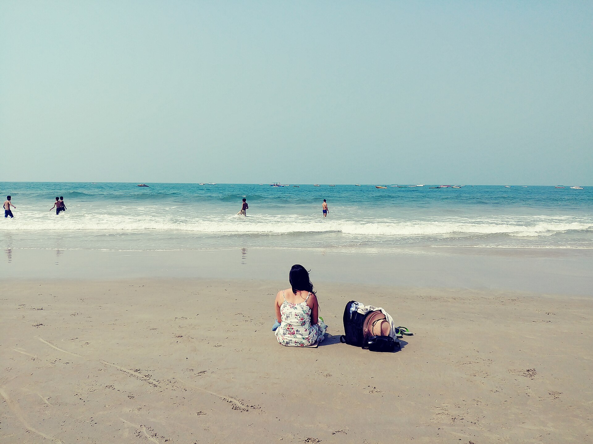
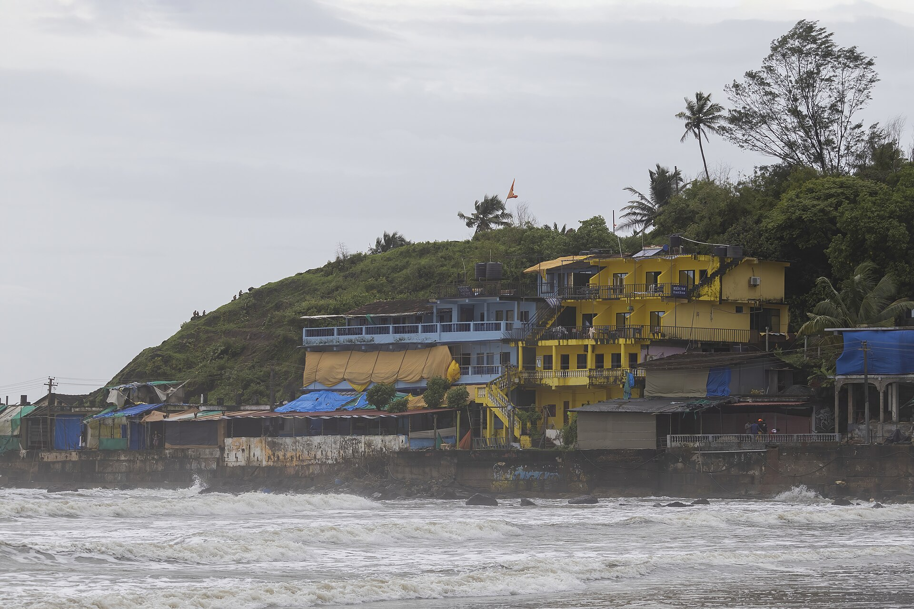
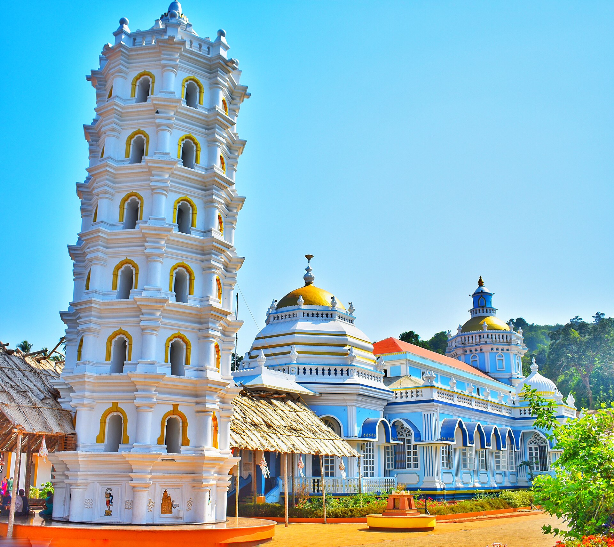
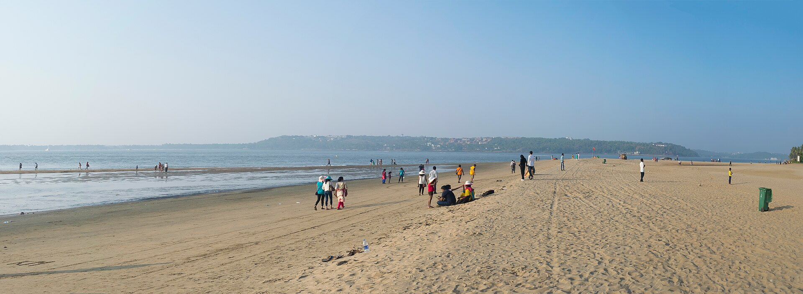
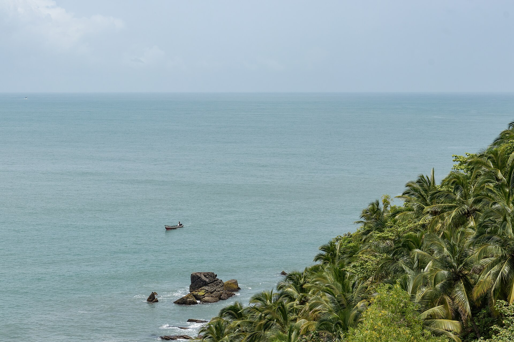